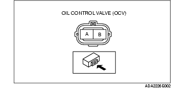
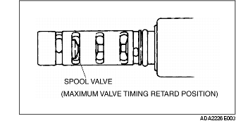

Oil control valve (OCV) inspection [ZY]
Coil resistance inspection
1. Disconnect the negative battery cable.
2. Disconnect the OCV connector.
3. Measure the coil resistance between terminals A and B using a tester.

Oil control valve (OCV) coil resistance
4. Connect the OCV connector.
Spool Valve Operation Inspection
1. Disconnect the negative battery cable.
2. Remove the OCV. (See OIL CONTROL VALVE (OCV) REMOVAL/INSTALLATION [ZY].)
3. Verify that the spool valve inside the OCV is at the maximum valve timing retard position as shown in the figure.

4. Verify that the battery is fully charged.
5. Apply battery positive voltage between oil control valve terminals A and B, and verify that the spool valve operates and moves to the maximum valve timing advance position.

- • When applying battery positive voltage between the oil control valve terminals, the connection of the negative and positive cable can be either the A or B terminal.
6. Stop applying battery positive voltage and verify that the spool valve returns to the maximum valve timing retard position.

7. Install the OCV. (See OIL CONTROL VALVE (OCV) REMOVAL/INSTALLATION [ZY].)